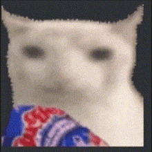

Sobre o Gato Chips
Gato Chips foi criado este ano com a ideia de animar os servidores e oferecer aquele suporte que alguns bots de música não dão, tipo, o suporte do YouTube pra escutar músicas.

Desenvolvido em VSCode
Gato Chips foi criado no aplicativo VSCode, onde alguns bots do Discord foram programados, tanto em Python quanto em Node.js
Futuro Promissor
Constantes atualizações e novos recursos sendo desenvolvidos